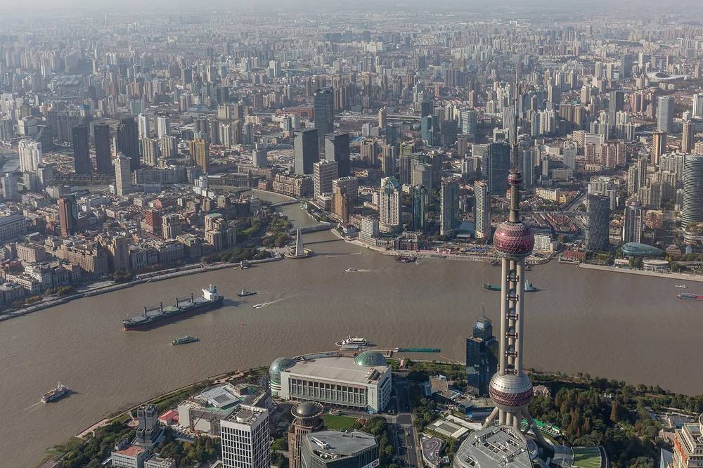

01专家及家属
10 月 12 日 · 周一
外滩的城市故事
The Bund & the Peace Hotel
从外滩的历史建筑到浦东天际线，认识上海的过去与现在。午餐后返回酒店，晚上再相聚，品尝上海风味。
预计步行约 1.5–2 公里
日间返店约 14:00，15:00 前
当天行程
酒店大堂集合
与导游会合，准备出发。
乘车前往外滩
沿途欣赏城市街景，前往黄浦江畔。
外滩漫步
欣赏代表性的历史建筑，留出天际线合影与自由拍照的时间。
外滩源与圆明园路
沿安静的街道短走，看看建筑外观与街区细节。
和平饭店与休息时光
欣赏和平饭店的建筑特色，并留出坐席休息时间；室内文化参观以饭店确认为准。
午餐 · 拟于和平饭店
在外滩一带享用午餐，具体餐厅由接待方确认。
返回酒店，下午自由安排
预计约 14:00 返店，预留下午活动的准备时间。
晚餐集合与接送
在酒店大堂再次集合，一同前往晚餐地点。
上海风味晚餐
品尝本地菜肴；请提前告知饮食偏好或过敏情况。
晚餐后返回酒店
结束当天行程，乘车返回酒店。
旅途亮点与实用提示

- 外滩沿江漫步，欣赏浦东天际线。
- 走进外滩源与圆明园路，感受历史街区的建筑细节。
- 和平饭店室内文化参观视饭店确认情况安排。